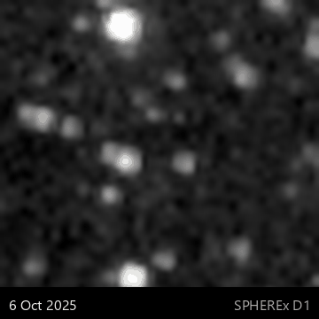

Planet X
Planet X, Pluto und SPHEREx
Die Suche nach einem Planeten jenseits des Neptun fand 1930 Pluto. Wie er gefunden wurde, was Astronomen heute vorhersagen und ob SPHEREx, das Teleskop der NASA, ihn sehen könnte.
Warum zweimal auf dieselbe Stelle schauen?
Weil Objekte sich bewegen oder verändern können. 1930 entdeckte Clyde Tombaugh Pluto, indem er zwei Fotografien desselben Himmelsausschnitts verglich und einen Punkt bemerkte, der sich verschoben hatte. SPHEREx beobachtet Hunderte Millionen Sterne und Galaxien immer wieder, viel zu viele, als dass ein einzelnes Team sie prüfen könnte. Je mehr Menschen beim Vergleichen der Bilder helfen, desto eher entdecken wir etwas Interessantes.

Planet X
Tombaugh fand Pluto, als er nach einem „Planeten X“ suchte, der jenseits des Neptun vorhergesagt worden war. Heute gehört der Name einer anderen Vorhersage: 2016 zeigten Astronomen am Caltech, dass die fernsten kleinen Körper des Sonnensystems so ausgerichtet sind, wie es die Schwerkraft eines unentdeckten Planeten erklären würde. Nach Angaben der NASA hätte er 5- bis 10-mal die Masse der Erde, wäre 20- bis 30-mal weiter von der Sonne entfernt als Neptun und bräuchte 10.000 bis 20.000 Jahre für einen Umlauf. Niemand hat ihn gesehen: Er bleibt eine Hypothese.
Könnte SPHEREx ihn sehen?
Wahrscheinlich nicht. Astronomen messen Helligkeit in Magnituden: je größer die Zahl, desto schwächer das Objekt. Eine Magnitude bedeutet 2,5-mal schwächer, fünf Magnituden genau 100-mal. Der schwächste Punkt in einer einzelnen SPHEREx-Aufnahme hat etwa Magnitude 19. Planet X wird bei Magnitude 22 bis 25 erwartet, also 16- bis 250-mal schwächer, und Suchen bis Magnitude 21 haben ihn nicht gefunden. Aber alles, was heller ist und sich bewegt, zeichnet SPHEREx auf: Es lässt sich so finden wie einst Pluto.
Eine Leiter der Helligkeit
- −1.5 Sirius, der hellste Stern
- 6 schwächster Stern für das bloße Auge
- 9.5 Barnards Stern
- 15 Pluto
- 19 schwächster Punkt in einer SPHEREx-Aufnahme
- Hier endet SPHEREx
- 22–25 Planet X, wie vorhergesagt
Eine Magnitude ist 2,5-mal schwächer, fünf sind 100-mal.
Wie man kalte Welten heute findet
Eine Welt jenseits des Neptun oder ein kalter Brauner Zwerg nahe der Sonne verrät sich wie Pluto: Sie bewegt sich. Heute läuft die Suche über Infrarotbilder, die Jahre auseinanderliegen. WISE 0855, der kälteste bekannte Braune Zwerg, wurde 2014 an seiner Bewegung in den Bildern von WISE gefunden; im Bild, das 2MASS 1998 von seiner Stelle aufnahm, ist nichts zu sehen, denn er ist zu kalt, um bei 2,2 Mikrometern zu leuchten. Die Ansicht „Jahre“ von Chronosphere findet ihn wieder, ohne dass man ihr sagt, wo sie suchen soll: 8,10 Bogensekunden im Jahr, in allen 23 Besuchen von WISE und NEOWISE (der Katalog gibt 8,15 an). Auch Luhman 16, das nächste Paar Brauner Zwerge, 2013 auf dieselbe Weise entdeckt, wird wiedergefunden.

WISE 0855 über 27 Jahre öffnen
Was macht Chronosphere?
Wählen Sie einen beliebigen Punkt am Himmel. Chronosphere findet im offenen Archiv der NASA jede SPHEREx-Aufnahme dieser Stelle, richtet die Bilder aneinander aus und spielt sie als kurzes Video ab. Außerdem bestimmt es das Objekt und erstellt sein Spektrum. Probieren wir es mit fünf Testobjekten aus.
Quellen: NASA: Hypothetical Planet X · NASA: Pluto · Lowell-Observatorium: die Entdeckungsplatten von Pluto · Batygin & Brown 2016 · Brown & Batygin 2016 · Brown, Holman & Batygin 2024 · Luhman 2014: WISE 0855 · Luhman 2013: Luhman 16 · Crill et al. 2025, der Himmelssimulator von SPHEREx · JPL Horizons: wo Pluto stand